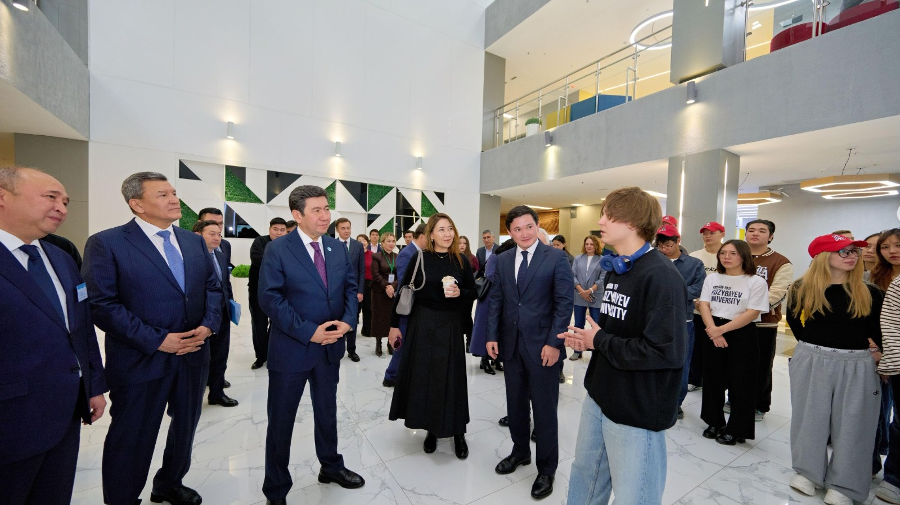

Визит Ерлана Кошанова: диалог с молодежью, новые возможности и перспективы
В рамках поездки в Северо-Казахстанскую область Председатель Қазақстан Халық Кеңесі Ерлан Кошанов принял участие в работе Республиканского молодежного лагеря «Ұлттың жаңа болмысы: жастар және азаматтық жауапкершілік» в Петропавловске. Главной темой встречи стало обсуждение президентских реформ, их роли в раскрытии потенциала молодежи и ее участия в реализации Послания Главы государства «Актуальные задачи Казахстана в новом историческом цикле». Обращаясь к участникам встречи, Ерлан Кошанов отметил, что Послание Президента задает курс на глубокую модернизацию страны, укрепление ее конкурентоспособности и рост благосостояния граждан. Решение этих задач требует консолидации всего общества, и особая роль здесь отводится молодежи. По словам Председателя Халық Кеңесі, с принятия Новой Конституции начался новый этап в развитии страны. Основной Закон заложил фундамент сильного государства, создав условия для экономического роста, развития человеческого капитала и вовлечения нового поколения в общественную жизнь. Тот факт, что свою первую встречу после референдума Президент провел именно с молодежью, подтверждает особое внимание Главы государства к ее мнению и настроениям. Ведь главными бенефициарами крупных государственных проектов станут молодые казахстанцы. Отдельное внимание было уделено международному образовательному сотрудничеству. В качестве примера приведена совместная двудипломная программа Kozybayev University и Университета Аризоны. В июле этого года первые 30 выпускников получили дипломы двух университетов. Среди них – Амир Агзамов, удостоенный американским университетом звания «Лучший выпускник года». Подобные достижения, признание заслуг молодых казахстанцев за рубежом и их вклад в развитие различных отраслей Председатель Халық Кеңесі назвал примером патриотизма и предметом национальной гордости. Член Правления Северо-Казахстанского университета имени М. Козыбаева Адильхан Толепберген акцентировал внимание на значении ответственного лидерства. Он подчеркнул, что молодые руководители должны уметь принимать самостоятельные решения, эффективно работать с командой и отвечать за результат, не допуская популизма и управленческой слабости. Такой подход соответствует ценностям «Адал азамат», продвигаемым Главой государства. Ключевым предложением встречи стало создание Молодежного движения «Халық Кеңесі». Ерлан Кошанов поддержал идею, подчеркнув, что такое объединение должно стать не формальной организацией, а действующей площадкой для воплощения молодежных идей. Члены Халық Кеңесі также встретились с общественностью региона, ознакомились с научно-образовательной инфраструктурой. Одним из объектов посещения делегации стал Kozybayev University.Здесь гости познакомились с научно-исследовательской инфраструктурой Kozybayev University. Делегация посетила лаборатории в области растениеводства и животноводства, созданные в рамках сотрудничества с Северо-Западным университетом сельского и лесного хозяйства Китая. Гостям представили результаты совместной работы, рассказали о развитии научного партнёрства и перспективах его расширения. В числе масштабных инициатив — создание совместного предприятия с китайской корпорацией Henan Agricultural Invest Group: проект позволит создать первый в Центральной Азии демонстрационный технопарк аграрных технологий и экспортного развития. Для реализации уже выделен земельный участок площадью 60 га. Здесь планируется развивать овощеводство и зерноводство, проводить селекционные исследования, а также внедрять современные технологии защиты растений. Проект призван объединить научный опыт университета и инвестиционный потенциал зарубежных партнёров, открывая новые возможности для аграрной отрасли региона. Отдельный блок визита был посвящён прикладным научным разработкам учёных университета. Ерлану Кошанову представили исследования по улучшению характеристик дорожных покрытий, применению микроводоросли хлореллы для биологической очистки водоёмов, а также созданию пластиковых сельскохозяйственных ёмкостей из переработанных отходов. Кроме того, гостям презентовали устройство наших ученых для мониторинга сердечной деятельности с системой передачи данных по Wi-Fi и находки периода Золотой Орды, сделанные на территории Северо-Казахстанской области нашими археологами. Ерлана Кошанова ознакомили и с IT-разработками студентов: картой аварийности дорог СКО, ИИ-агентами для прибора отечественной видеотелефонии «Soilephone», а также деятельностью Центра ИИ и цифровой трансформации и Tomorrow School. Одной из площадок встречи стало общение со студентами программ двойного диплома, реализуемых совместно с Университетом Аризоны (США). Молодые люди рассказали о своём обучении, поделились идеями и дальнейшими планами.Также Председателю Халық Кеңесі сообщили о деятельности представительства КазНУИ им. К. Байсеитовой, которое в СКО базируется в кампусе Kozybayev University и реализации проекта по строительству отдельного здания для этого вуза. Глава государства последовательно уделяет особое внимание вопросам молодежной политики, созданию условий для самореализации, качественного образования и профессионального становления нового поколения. Поддержка молодежи остается одним из приоритетов государственной повестки. Такие встречи позволяют молодым людям напрямую общаться с представителями руководства страны, быть услышанными, делиться своими мыслями, а также лучше понимать возможности и перспективы, которые открываются перед ними. Это не только укрепляет диалог между поколениями, но и формирует у молодежи чувство сопричастности к происходящим в стране преобразованиям и ответственности за ее будущее.
читать далее